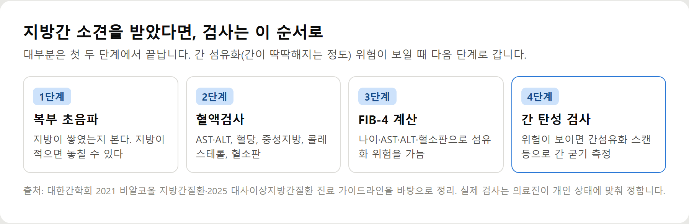
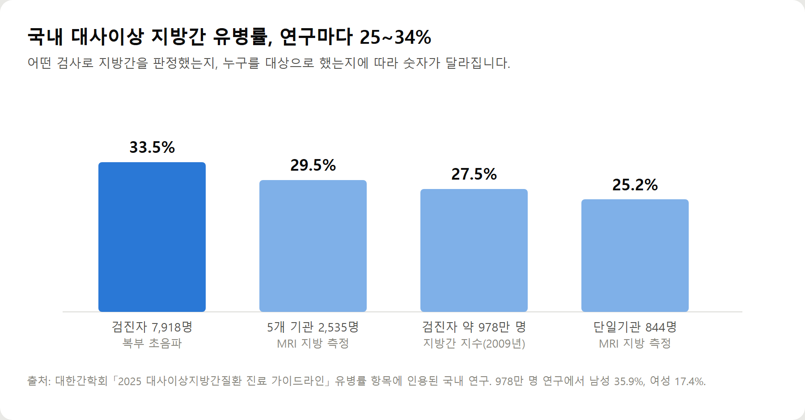

<meta charset="utf-8">
<title>대사이상 지방간 원인·증상·검사·관리 총정리 — 나의 투자 그리고 행복한 여행</title>
<meta name="description" content="대사이상 지방간(MASLD)은 간 지방에 비만·혈당·혈압·중성지방·HDL 중 하나 이상이 겹친 상태입니다. 대한간학회 2025 기준으로 원인·증상·검사·관리법을 정리했습니다.">
<meta name="viewport" content="width=device-width, initial-scale=1">
<link rel="canonical" href="https://worldtraveler1.tistory.com/124">
<link rel="preconnect" href="https://fonts.googleapis.com">
<link rel="preconnect" href="https://fonts.gstatic.com" crossorigin>
<link rel="stylesheet" href="https://fonts.googleapis.com/css2?family=Hahmlet:wght@400;600;800&family=IBM+Plex+Mono:wght@400;500&family=IBM+Plex+Sans+KR:wght@300;400;500;600&display=swap">

<style>
  :root{
    --paper:#F2EEE6;--surface:#FAF8F3;--surface-2:#E7E1D5;
    --ink:#191510;--ink-2:#4A4235;--ink-3:#7D7364;
    --line:#D6CEBF;--line-soft:#E4DDD0;--accent:#B06A15;--accent-bright:#C2761A;
    --up:#E5484D;--down:#3B82F6;
    --f-display:"Hahmlet",'Nanum Myeongjo',"Apple SD Gothic Neo",serif;
    --f-body:"IBM Plex Sans KR","Apple SD Gothic Neo","Malgun Gothic",sans-serif;
    --f-mono:"IBM Plex Mono","SFMono-Regular",Consolas,monospace;
    --pad:clamp(20px,5vw,64px);
  }
  @media (prefers-color-scheme:dark){
    :root:not([data-theme="light"]){
      --paper:#0B1120;--surface:#121A2C;--surface-2:#1A2439;
      --ink:#E9EEF7;--ink-2:#A9B5C9;--ink-3:#72809A;
      --line:#26314A;--line-soft:#1D2739;--accent:#E8A33D;--accent-bright:#F0B45C;
    }
  }
  *{box-sizing:border-box;}
  body{margin:0;background:var(--paper);color:var(--ink);font-family:var(--f-body);
    font-weight:300;font-size:1rem;line-height:1.75;-webkit-font-smoothing:antialiased;}
  a{color:inherit;}
  img{max-width:100%;height:auto;}
  .wrap{max-width:760px;margin:0 auto;padding-inline:var(--pad);}
  .nav{position:sticky;top:0;z-index:20;background:color-mix(in srgb,var(--paper) 88%,transparent);
    backdrop-filter:saturate(180%) blur(12px);border-bottom:1px solid var(--line);}
  .nav-in{display:flex;align-items:center;justify-content:space-between;height:58px;}
  .brand{font-family:var(--f-display);font-weight:600;font-size:1rem;letter-spacing:-.02em;text-decoration:none;}
  .back{font-family:var(--f-mono);font-size:.72rem;color:var(--ink-3);text-decoration:none;}
  .article{padding-block:clamp(40px,7vw,72px) clamp(56px,9vw,96px);}
  .eyebrow{font-family:var(--f-mono);font-size:.68rem;letter-spacing:.16em;text-transform:uppercase;
    color:var(--accent);margin:0 0 14px;}
  h1{font-family:var(--f-display);font-weight:800;font-size:clamp(1.6rem,4.4vw,2.3rem);
    line-height:1.3;letter-spacing:-.03em;margin:0 0 16px;}
  .byline{font-family:var(--f-mono);font-size:.72rem;color:var(--ink-3);
    padding-bottom:24px;border-bottom:1px solid var(--line);margin-bottom:32px;}
  h2{font-family:var(--f-display);font-weight:600;font-size:1.25rem;letter-spacing:-.02em;margin:42px 0 14px;}
  h3{font-family:var(--f-display);font-weight:600;font-size:1.05rem;letter-spacing:-.02em;
    margin:30px 0 10px;padding-top:14px;border-top:1px solid var(--line-soft);}
  h3 .code{font-family:var(--f-mono);font-size:.7rem;font-weight:400;color:var(--ink-3);margin-left:6px;}
  p{margin:0 0 18px;color:var(--ink-2);}
  ul.checks{margin:0 0 18px;padding-left:20px;color:var(--ink-2);}
  ul.checks li{margin-bottom:8px;font-size:.94rem;}
  table{width:100%;border-collapse:collapse;font-size:.88rem;margin-bottom:8px;}
  th{font-family:var(--f-mono);font-size:.66rem;letter-spacing:.06em;text-transform:uppercase;
    color:var(--ink-3);text-align:right;padding:8px 6px;border-bottom:1px solid var(--line);}
  th:first-child{text-align:left;}
  td{padding:10px 6px;border-bottom:1px solid var(--line-soft);color:var(--ink-2);}
  td.num{font-family:var(--f-mono);text-align:right;font-variant-numeric:tabular-nums;}
  td.up{color:var(--up);} td.down{color:var(--down);}
  .scroll{overflow-x:auto;}
  figure{margin:22px 0;}
  figure img{display:block;border-radius:3px;background:var(--surface-2);}
  figcaption{margin-top:8px;font-family:var(--f-mono);font-size:.68rem;color:var(--ink-3);text-align:center;}
  .note{margin-top:34px;padding:16px 18px;border-left:3px solid var(--accent);
    background:var(--surface);border-radius:0 3px 3px 0;}
  .note p{margin:0;font-size:.85rem;color:var(--ink-3);}
  .foot{border-top:1px solid var(--line);background:var(--surface);padding-block:30px 38px;}
  .foot p{margin:0;font-size:.8rem;color:var(--ink-3);}
</style>

<nav class="nav">
  <div class="wrap nav-in">
    <a class="brand" href="../index.html">나의 투자 그리고 행복한 여행</a>
    <a class="back" href="../index.html#stocks">← 시황으로</a>
  </div>
</nav>

<main class="wrap article">
  <p class="eyebrow">Market</p>
  <h1>간수치 정상인데 지방간? 대사이상 지방간 검사 순서 4단계 요약</h1>
  <p class="byline">건강 · 2026-10-05 기준</p>

  <p><b>이 포스팅은 쿠팡 파트너스 활동의 일환으로, 이에 따른 일정액의 수수료를 제공받습니다.</b></p>
  <p><b>이 포스팅은 네이버 쇼핑 커넥트 활동의 일환으로, 판매 발생 시 수수료를 제공받습니다.</b></p>
  <p>한 줄 요약: 간수치가 정상이어도 지방간일 수 있고, 중요한 건 지방의 양보다 간이 얼마나 굳었는지(섬유화)입니다.</p>
  <p>진단 기준은 대한간학회 2025 대사이상지방간질환 진료 가이드라인, 생활습관 기준은 같은 학회 2021 가이드라인입니다.</p>
  <h2>간수치가 정상인데 지방간이라는 말, 왜 나올까</h2>
  <p>AST·ALT는 간세포가 손상될 때 오르는 숫자입니다. 지방만 쌓인 단계에서는 정상으로 나오는 일이 흔해요. 그래서 대한간학회는 당뇨병이 있으면 간수치와 상관없이 지방간 검사를 권합니다.</p>
  <p>반대로 초음파는 간 속 지방이 30% 미만이면 잘 못 잡을 수 있습니다. 두 검사 모두 한계가 있어서 같이 봐야 하는 이유예요.</p>
  <h2>검사 순서 4단계</h2>
  <figure><figcaption>지방간 소견 이후 검사 순서 — 초음파·혈액검사 → FIB-4 → 간 탄성 검사</figcaption></figure>
  <ul class="checks">
    <li>1단계 복부 초음파 — 지방이 쌓였는지</li>
    <li>2단계 혈액검사 — 간수치, 혈당, 중성지방, 콜레스테롤, 혈소판</li>
    <li>3단계 FIB-4 — 혈액검사 숫자로 계산하는 섬유화 위험 점수</li>
    <li>4단계 간 탄성 검사 — 위험이 보이면 간섬유화 스캔 등으로 굳기 측정</li>
  </ul>
  <p>중요한 건 지방의 양보다 섬유화입니다. 지방만 있는 단계에서 간암이 생기는 비율은 매우 낮지만, 간경변까지 가면 간암 감시검사가 필요해집니다.</p>
  <h2>검사 전 위험인자 체크리스트</h2>
  <ul class="checks">
    <li>□ 허리둘레가 남자 90cm, 여자 85cm 이상이다</li>
    <li>□ 공복혈당이 100mg/dL 이상이라는 말을 들었다</li>
    <li>□ 중성지방이 150mg/dL 이상이다</li>
    <li>□ 혈압이 130/85mmHg 이상이거나 혈압약을 먹는다</li>
    <li>□ HDL 콜레스테롤이 낮다(남 40, 여 50 이하)</li>
    <li>□ 당뇨병이 있다</li>
    <li>□ 숨이 찰 만큼 운동하는 날이 일주일에 3일이 안 된다</li>
    <li>□ 건강검진에서 지방간 소견을 받은 적이 있다</li>
  </ul>
  <p>이 체크리스트로 병을 진단할 수는 없습니다. 해당 항목이 여러 개라면 '확인해 볼 필요가 있다'는 신호로만 받아들이고, 검사 결과를 가지고 의료진과 상의하세요.</p>
  <h2>국내에서 얼마나 흔한가</h2>
  <figure><figcaption>국내 연구별 대사이상 지방간 유병률 (대한간학회 2025 가이드라인 인용 연구)</figcaption></figure>
  <p>검사 방법과 대상에 따라 25~34% 사이로 보고됩니다. 978만 명 검진 자료에서는 남성 35.9%, 여성 17.4%였어요. 성인 서너 명 중 한 명꼴이라 검진에서 마주칠 가능성이 높은 소견입니다.</p>
  <h2>관리 기준 숫자 3개</h2>
  <ul class="checks">
    <li>체중 5% 감량 → 간 지방 감소 / 7~10% → 염증·섬유화 개선</li>
    <li>하루 500kcal 줄이기</li>
    <li>주 3회 이상, 30분 이상 중등도 운동</li>
  </ul>
  <p>허리둘레를 한 달에 한 번 재 두면 다음 검진까지 방향이 맞는지 볼 수 있습니다. 단 음료를 끊기 어렵다면 무가당 탄산수로 바꾸는 것부터 시작해도 됩니다.</p>
  <div style="text-align:center;margin:30px 0"><a href="https://link.coupang.com/a/hdEjDsbcvQ" target="_blank" rel="nofollow sponsored noopener" style="display:inline-block;padding:15px 28px;background:#E34948;color:#fff;font-weight:700;font-size:18px;text-decoration:none;border-radius:8px"><b>▶ 쿠팡에서 보기 — 아케이 리빙 원터치 줄자</b></a></div>
  <div style="text-align:center;margin:30px 0"><a href="https://naver.me/F05FIHMO" target="_blank" rel="nofollow sponsored noopener" style="display:inline-block;padding:15px 28px;background:#E34948;color:#fff;font-weight:700;font-size:18px;text-decoration:none;border-radius:8px"><b>▶ 네이버에서 보기 — 더 빅토리아 탄산수 플레인 500mL 20개 (웅진식품)</b></a></div>
  <div style="text-align:center;margin:30px 0"><a href="https://worldtraveler1.tistory.com/124" target="_blank" rel="nofollow sponsored noopener" style="display:inline-block;padding:15px 28px;background:#E34948;color:#fff;font-weight:700;font-size:18px;text-decoration:none;border-radius:8px"><b>▶ 원문에서 전체 내용 보기 — 대사이상 지방간 원인부터 관리법까지 총정리</b></a></div>
  <div style="text-align:center;margin:30px 0"><a href="https://danielmoon82.github.io/moon/posts/fatliver-habits-2026-09-24.html" target="_blank" rel="nofollow sponsored noopener" style="display:inline-block;padding:15px 28px;background:#E34948;color:#fff;font-weight:700;font-size:18px;text-decoration:none;border-radius:8px"><b>▶ 함께 보면 좋은 글 — 지방간 생활습관 관리 요약, 체중·운동·음주 기준 숫자</b></a></div>
  <h2>참고자료</h2>
  <ul class="checks">
    <li>대한간학회 — 2025 대사이상지방간질환 진료 가이드라인 (정의·진단 기준·유병률·예후)</li>
    <li>대한간학회 — 2021 비알코올 지방간질환 진료 가이드라인 (선별검사·체중감량·식이·운동 권고)</li>
  </ul>
  <div class="note"><p>이 글은 건강정보를 이해하기 쉽게 정리한 일반적인 정보이며, 개인의 진단이나 치료를 대신할 수 없습니다. 건강검진 결과에 이상이 있거나 증상이 있다면 의료진과 상담하세요. 진단 기준과 수치는 대한간학회 2025 대사이상지방간질환 진료 가이드라인, 생활습관 권고는 같은 학회 2021 비알코올 지방간질환 진료 가이드라인 기준입니다(2026년 10월 확인).</p></div>
  <p style="font-size:12px;color:#999;line-height:1.6;margin-top:36px">이 포스팅은 쿠팡 파트너스 활동의 일환으로, 이에 따른 일정액의 수수료를 제공받습니다.</p>
  <p style="font-size:12px;color:#999;line-height:1.6;margin-top:36px">이 포스팅은 네이버 쇼핑 커넥트 활동의 일환으로, 판매 발생 시 수수료를 제공받습니다.</p>
</main>

<footer class="foot">
  <div class="wrap"><p>나의 투자 그리고 행복한 여행 · 투자 판단의 참고 자료일 뿐, 매수·매도를 권유하지 않습니다.</p></div>
</footer>
